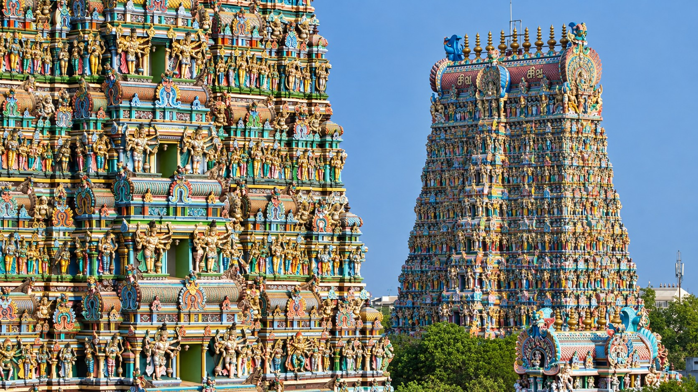
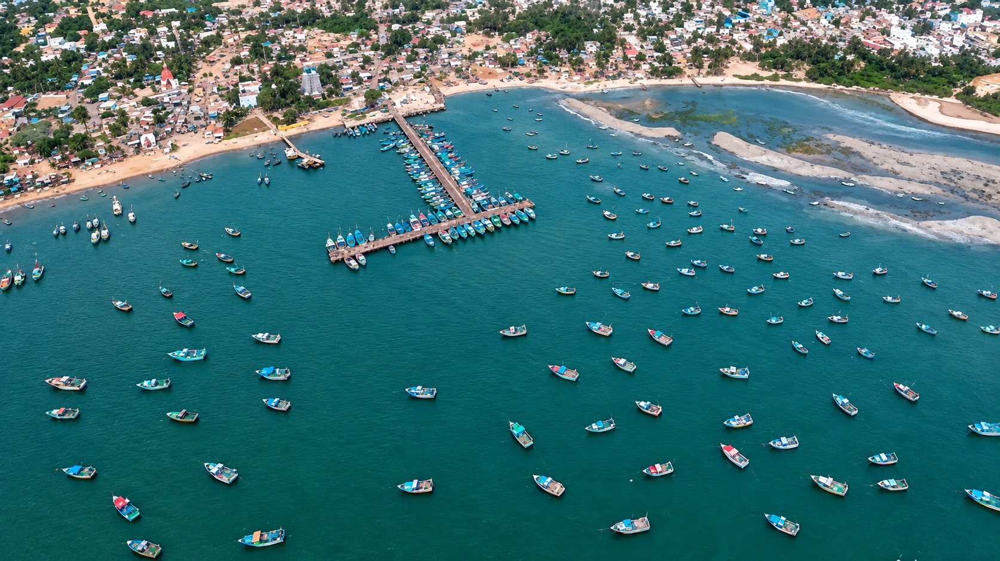
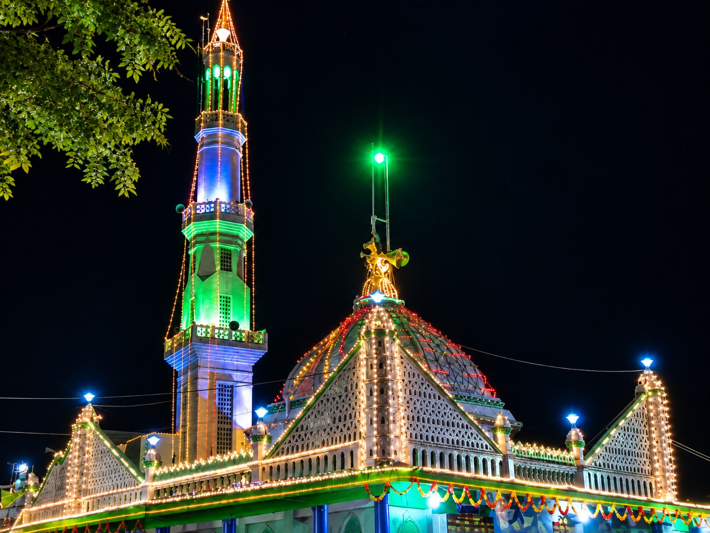
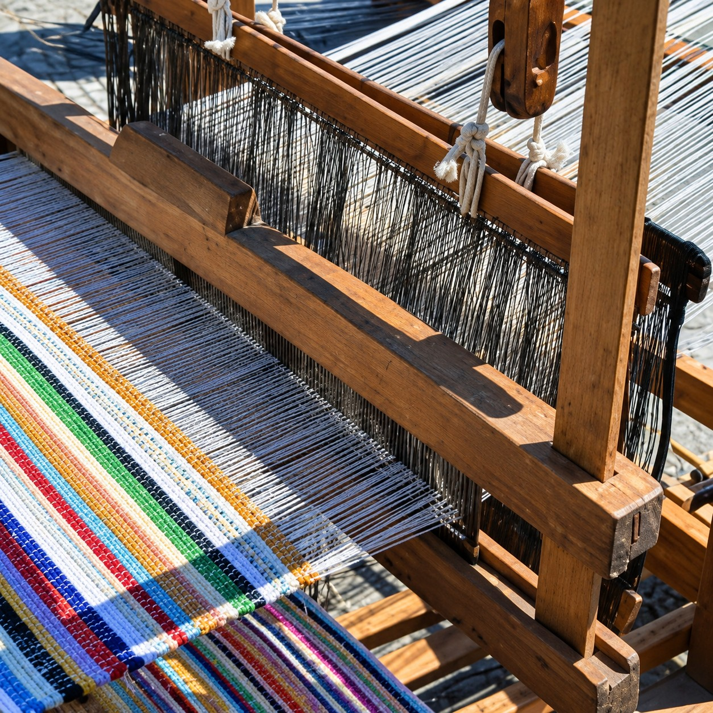

CULTURE & TRADITIONS
Sacred Rituals, Coastal Hamlets, Ancient Festivals & Artisan Crafts
Scroll to ExploreTHE CULTURAL MOSAIC
Discover how ancient maritime harmony, grand temple car festivals, and skilled handloom artisans create an authentic cultural rhythm.

Vedic SanctityTemple Culture & Agamas
Centuries of Vedic rituals, Nadaswaram temple hymns, and evening brass lamp aartis define daily life in Rameswaram, Uthirakosamangai, and Thiruppullani. The rituals at the 22 theerthams represent an ancient synthesis of physical cleansing and spiritual communion.

Maritime SoulCoastal & Fishing Communities
For generations, brave fishermen have navigated the treacherous currents of Palk Bay and Gulf of Mannar aboard traditional timber catamarans and country crafts. Shore-seine fishing, folk sea songs (Amba songs), and deep reverence for Kadalamma (Mother Sea) guide the coastal hamlets.

Maritime Trade PortIslamic Maritime Heritage
Kilakarai was among the earliest trade ports in India to welcome Arab merchant traders in the 7th century. The town is famous for the Old Jumma Masjid (Palaiya Jumma Palli), featuring unique Dravidian stone-pillared Islamic architecture, traditional coral stone houses, and world-renowned pearl merchants.

Master CraftsmanshipHandlooms, Village Life & Markets
Paramakudi is celebrated for its generational community of cotton and silk weavers producing soft, durable handloom sarees. Rural weekly shandies (village markets) buzz with traders selling fresh sea salt, coconut coir, palm jaggery, and vibrant heaps of red Ramnad Mundu chillies.
ICONIC FESTIVALS
Vibrant annual celebrations drawing pilgrims and travellers from across India.
Aadi Amavasai
Over half a million pilgrims gather at Agni Theertham shore in Rameswaram for auspicious tarpanam ceremonies in honour of ancestors, followed by holy dips and temple worship.
Arudra Darshanam
The single day of the year when the 5.5-foot emerald Nataraja idol at Thiru Uthirakosamangai is unveiled from its sandalwood coating for public darshan and magnificent abhishekam.
Maha Shivratri
Night-long devotional vigils, continuous four-kala pujas, classical Bharatanatyam performances, and spectacular temple car processions at Ramanathaswamy Temple.
SANTHANAKOODU FESTIVAL
The Ervadi Santhanakoodu Festival is a major annual Islamic festival held at Ervadi Dargah in Ramanathapuram district. It commemorates the anniversary of Sultan Syed Ibrahim Shaheed Badhusha Oliyullah, whose shrine at Ervadi is an important pilgrimage centre and a significant part of the region's spiritual and cultural heritage. The festival attracts large numbers of devotees and visitors.
* Note: February–March is a general reference only and is not a fixed annual Gregorian date because the festival follows the Islamic lunar calendar.